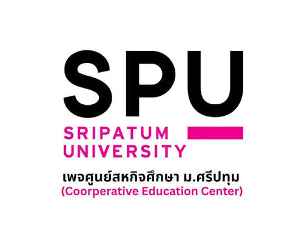

ความเป็นมาของมหาวิทยาลัยศรีปทุม วิทยาเขตชลบุรี
จุดเริ่มต้นและแนวคิดการจัดตั้งขยายโอกาส: ดร.สุข พุคยาภรณ์ มองเห็นว่าสถาบันอุดมศึกษาชั้นสูงกระจุกตัวอยู่ในกรุงเทพฯ ทำให้เยาวชนในต่างจังหวัดขาดโอกาสศึกษาต่อ
รองรับการเติบโต: จัดตั้งขึ้นเพื่อตอบสนองนโยบายพัฒนาพื้นที่ชายฝั่งทะเลภาคตะวันออก (Eastern Seaboard) และเตรียมผลิตบุคลากรคุณภาพป้อนตลาดแรงงานในภูมิภาค